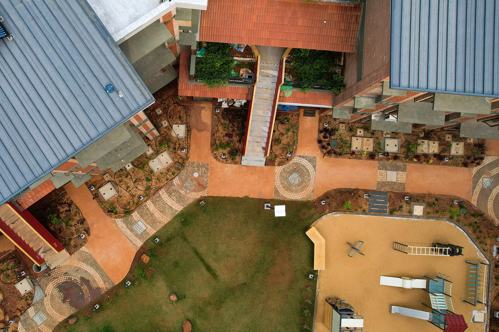
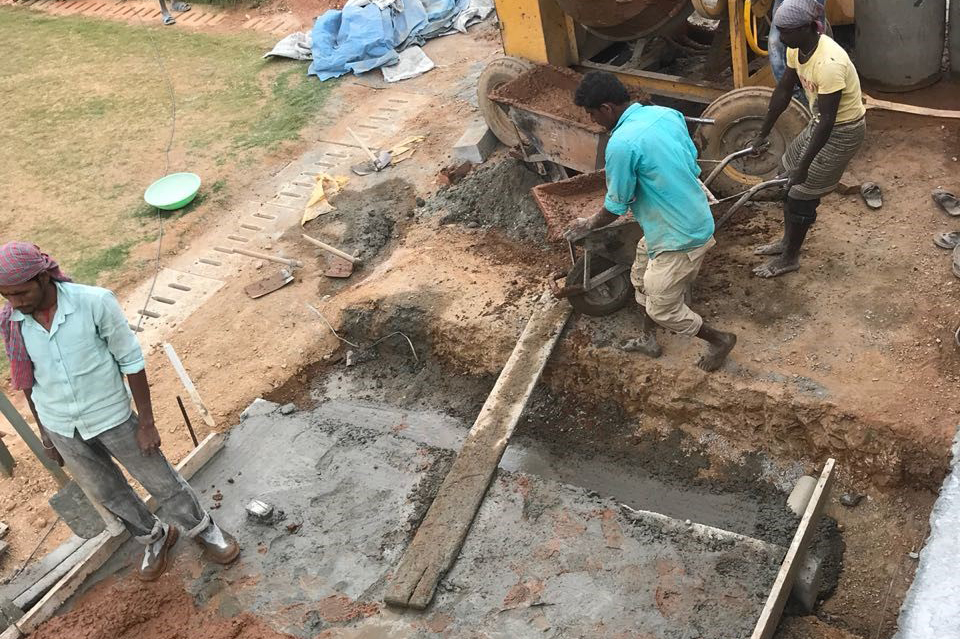
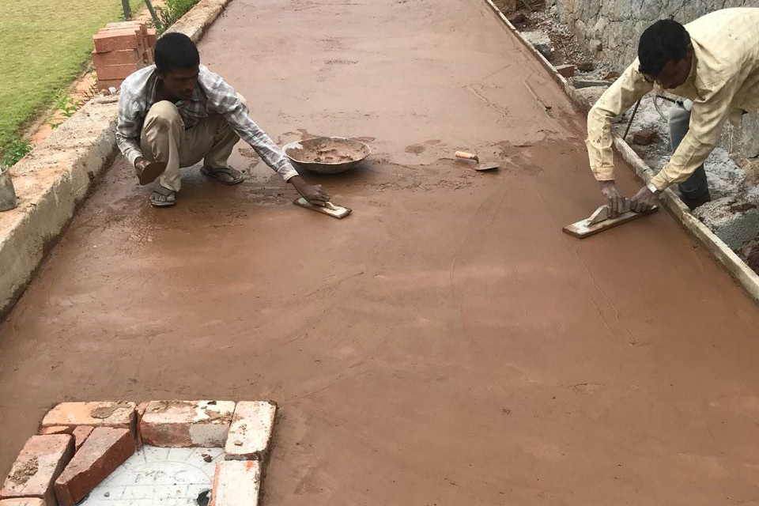
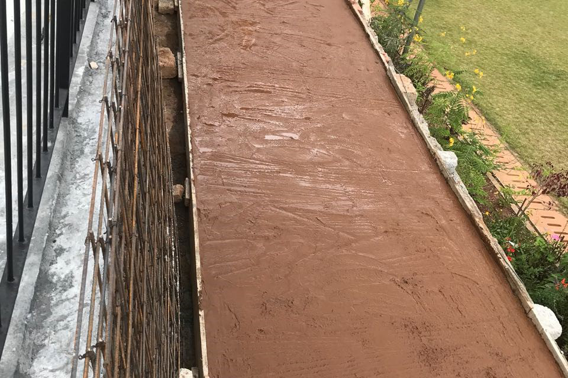
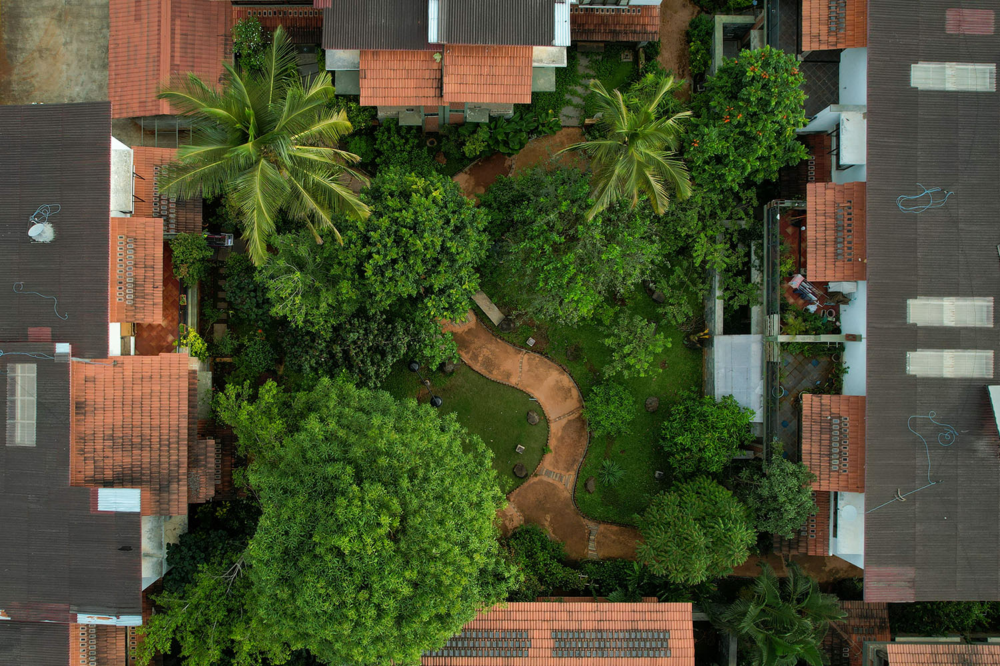

Materials
Materials
This article is a clone from the original GoodEarth Connect catalog. View the original post at:
Designing Mud Concrete Pathways ↗
GoodEarth – September 14, 2020

Walkways are crucial to any landscape design. The ‘pedestrian lanes’ are both functional and aesthetic. These are the passages that allow you to walk, jog, skate, bike and bask in the cool breezes of the colourful landscaped areas at any time of the year without getting your shoes wet or dirty. The design, style, colour and texture of the walkway defines the character and sets the mood of the outdoor area manoeuvring one to various focal points.When designing the walkways of Malhar eco-village, we wanted a firm, stable, and slip-resistant organic walkway that curves and twists along the natural terrain of the site. The winding path had to offer tranquillity, functionality, openness and a sense of mystery.
The Process & Techniques
Concrete Pathway
A normal concrete pathway is laid out (with/ without reinforcement depending on the functionality of the space) in the given proportions.

Concrete Mixture
With an additional mix of soil to the concrete mixture, the mud concrete is then poured on top.

Smooth Finish
For a smooth finish, an addition of surkhi mix with red earth and white sand is also done to give an authentic look to the walkway.

The Proportion
A brushed effect: With a broom, textures are drawn out on the walkway for friction which also adds a rustic charm to the walkway

Concept of Malhar ECO Village
As the concept at Malhar eco-village was to retain the gentle slope of the undulating terrain, mud concrete was the preferred choice due to its ease in implementation at intersections and difference in levels. With the expertise of K. Jagadeesh, an emeritus professor from RV College of Engineering, 6 inches of concrete pathway was decided as the optimum depth. In order to make it economical without losing on the aesthetics or durability, the walkways at Malhar have a Plain Cement Concrete (PCC) base of 4 inches (reinforcement may be provided depending on the functionality of the area) followed by mud concrete of 2 inches which is then finished with a mud slurry for smoothness patterned with a brush for friction
